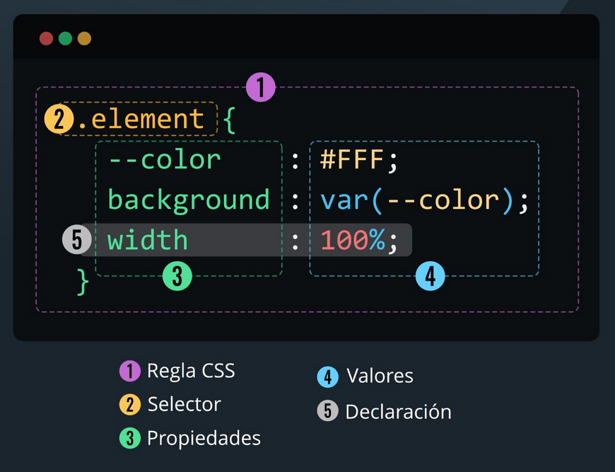

Introducción
CSS (Cascading Style Sheets) es un lenguaje especializado en estilizar los documentos HTML y
XML, basicamente, le dice al navegador como debe verse una pagina. Es el segundo pilar de las tecnologias web junto a JavaScript
y al ya mencionado HTML. En este post desarrollaremos todolo necesario para empezar a usar CSS, selectores, propiedades y valor.
Sintaxis
Selector
Es el elemento HTML al que quieres aplicar el estilo, seguido a este se abren unas
llaves que indican el bloque de codigo donde se cuentran las propiedades que se le asignara
a esta etiqueta.
Propiedad
Es el aspecto en concreto de la etiqueta que se quiere cambiar, como puede ser su color,
tamaño, alineación, la fuente de texto, el tamaño de la fuente de texto, el color del fondo,
el color de los bordes, el tamaño de los bordes y una infinidad de aspectos mas.
Valores
El ajuste especifico que se le quiere hacer a la propiedad seleccionada, puede ser
la cantidad de pixeles para el tamaño, el color exacto del fondo, cuantos pixeles de
margen tendra el objeto, etc.
Declaración
Es cada propiedad y valor que esta dentro de las llaves. Se utilizan
los : para separar las porpiedades de los valores y los ; para separar declaraciones

Clases
Las clases son etiquetas personalizadas que tú creas para agrupar elementos que quieres que se
vean iguales, sin importar qué tipo de etiqueta HTML sean. Se define con un . y se utiliza el
atributo global class en la etiqueta html en la que quieres que se aplique el estilo de la
clase.
Ejemplo de clase en CSS
.mi-boton {
background-color: red;
color: white;
}
Ejemplo de uso en HTML
<button class="mi-boton">Haz clic aquí</button>
Pseudo-clases
Las pseudo-clases son palabras clave que se añaden a los selectores para definir un estado especial
de un elemento. Permiten aplicar estilos basándose en interacción del usuario o la posición del elemento
en el documento.
| Pseudo-clase |
Descripción |
| :hover |
Se aplica cuando el ratón está sobre el elemento |
| :active |
Se aplica cuando el elemento está siendo pulsado o activado |
| :focus |
Se aplica cuando el elemento tiene el foco (como inputs) |
| :visited |
Se aplica a enlaces que ya han sido visitados |
| :link |
Se aplica a enlaces que no han sido visitados |
| :first-child |
Se aplica al primer hijo de un elemento |
| :last-child |
Se aplica al último hijo de un elemento |
| :nth-child(n) |
Se aplica al n-ésimo hijo de un elemento |
| :not(selector) |
Se aplica a elementos que no coinciden con el selector especificado |
| :checked |
Se aplica a checkboxes o radio buttons que están marcados |
Propiedades
A continuación se presentan las propiedades CSS más utilizadas para estilizar tus páginas web:
| Propiedad |
Descripción |
Ver mas |
| color |
Define el color del texto de un elemento |
Ver -> |
| background-color |
Establece el color de fondo de un elemento |
Ver -> |
| font-family |
Define la familia de fuente que se utilizará para el texto |
Ver -> |
| margin |
Establece el margen externo de un elemento |
Ver -> |
| padding |
Define el espacio de relleno interno de un elemento |
Ver -> |
| border |
Define el borde de un elemento |
Ver -> |
| display |
Define el tipo de caja que se genera para un elemento |
Ver -> |
| width |
Establece el ancho de un elemento |
Ver -> |
| height |
Establece la altura de un elemento |
Ver -> |
<-Regresar al inicio